Unit 8
The d- and f-Block Elements
The d- and f-Block Elements

Objectives
After studying this Unit, you will be able to
• learn the positions of the d– and f-block elements in the periodic table;
• know the electronic configurations of the transition (d-block) and the inner transition (f-block) elements;
• appreciate the relative stability of various oxidation states in terms of electrode potential values;
• describe the preparation, properties, structures and uses of some important compounds such as K2Cr2O7 and KMnO4;
• understand the general characteristics of the d– and f–block elements and the general horizontal and group trends in them;
• describe the properties of the f-block elements and give a comparative account of the lanthanoids and actinoids with respect to their electronic configurations, oxidation states and chemical behaviour.
Iron, copper, silver and gold are among the transition elements that have played important roles in the development of human civilisation. The inner transition elements such as Th, Pa and U are proving excellent sources of nuclear energy in modern times.
The d-block of the periodic table contains the elements of the groups 3-12 in which the d orbitals are progressively filled in each of the four long periods. The elements constituting the f -block are those in which the 4 f and 5 f orbitals are progressively filled in the latter two long periods; these elements are formal members of group 3 from which they have been taken out to form a separate f-block of the periodic table. The names transition metals and inner transition metals are often used to refer to the elements of d-and f-blocks respectively.
There are mainly three series of the transition metals, 3d series (Sc to Zn), 4d series (Y to Cd) and 5d series (La to Hg, omitting Ce to Lu). The fourth 6d series which begins with Ac is still incomplete. The two series of the inner transition metals, (4f and 5f) are known as lanthanoids and actinoids respectively.
Strictly speaking, a transition element is defined as the one which has incompletely filled d orbitals in its ground state or in any one of its oxidation states. Zinc, cadmium and mercury of group 12 have full d10 configuration in their ground state as well as in their common oxidation states and hence, are not regarded as transition metals. However, being the end members of the three transition series, their chemistry is studied along with the chemistry of the transition metals.
The presence of partly filled d or f orbitals in their atoms sets the study of the transition elements and their compounds apart from that of the main group elements. However, the usual theory of valence as applicable to the main group elements can also be applied successfully to the transition elements.
Various precious metals such as silver, gold and platinum and industrially important metals like iron, copper and titanium form part of the transition metals.
THE TRANSITION ELEMENTS (d-BLOCK)
8.1 Position in the Periodic Table
The d–block occupies the large middle section flanked by s– and p– blocks in the periodic table. The very name ‘transition’ given to the elements of d-block is only because of their position between s– and p– block elements. The d–orbitals of the penultimate energy level in their atoms receive electrons giving rise to the three rows of the transition metals, i.e., 3d, 4d and 5d. The fourth row of 6d is still incomplete. These series of the transition elements are shown in Table 8.1.
8.2 Electronic Configurations of the d-Block Elements
In general the electronic configuration of these elements is (n-1)d1–10ns1–2. The (n–1) stands for the inner d orbitals which may have one to ten electrons and the outermost ns orbital may have one or two electrons. However, this generalisation has several exceptions because of very little energy difference between (n-1)d and ns orbitals. Furthermore, half and completely filled sets of orbitals are relatively more stable. A consequence of this factor is reflected in the electronic configurations of Cr and Cu in the 3d series. Consider the case of Cr, for example, which has 3d5 4s1 instead of 3d44s2; the energy gap between the two sets (3d and 4s) of orbitals is small enough to prevent electron entering the 3d orbitals. Similarly in case of Cu, the configuration is 3d104s1 and not 3d94s2. The outer electronic configurations of the transition elements are given in Table 8.1.
Table 8.1: Outer Electronic Configurations of the Transition Elements (ground state)
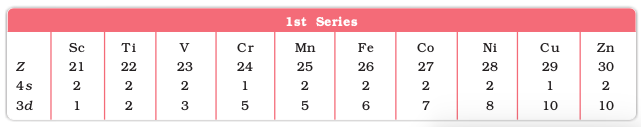
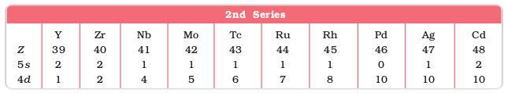
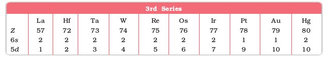
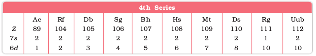
The electronic configurations of Zn, Cd and Hg are represented by the general formula (n-1)d10ns2. The orbitals in these elements are completely filled in the ground state as well as in their common oxidation states. Therefore, they are not regarded as transition elements.
The d orbitals of the transition elements project to the periphery of an atom more than the other orbitals (i.e., s and p), hence, they are more influenced by the surroundings as well as affecting the atoms or molecules surrounding them. In some respects, ions of a given dn configuration (n = 1 – 9) have similar magnetic and electronic properties. With partly filled d orbitals these elements exhibit certain characteristic properties such as display of a variety of oxidation states, formation of coloured ions and entering into complex formation with a variety of ligands.
The transition metals and their compounds also exhibit catalytic property and paramagnetic behaviour. All these characteristics have been discussed in detail later in this Unit.
There are greater horizontal similarities in the properties of the transition elements in contrast to the main group elements. However, some group similarities also exist. We shall first study the general characteristics and their trends in the horizontal rows (particularly 3d row) and then consider some group similarities.
Example 8.1
On what ground can you say that scandium (Z = 21) is a transition element but zinc (Z = 30) is not?
Solution
On the basis of incompletely filled 3d orbitals in case of scandium atom in its ground state (3d1), it is regarded as a transition element. On the other hand, zinc atom has completely filled d orbitals (3d10) in its ground state as well as in its oxidised state, hence it is not regarded as a transition element.
Intext Question
8.1 Silver atom has completely filled d orbitals (4d10) in its ground state. How can you say that it is a transition element?
8.3 General Properties of the Transition Elements (d-Block)
8.3.1 Physical Properties
Nearly all the transition elements display typical metallic properties such as high tensile strength, ductility, malleability, high thermal and electrical conductivity and metallic lustre. With the exceptions of Zn, Cd, Hg and Mn, they have one or more typical metallic structures at normal temperatures.
Lattice Structures of Transition Metals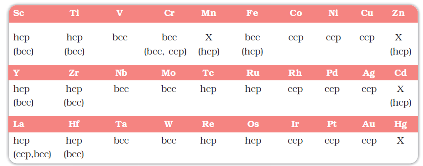
bcc = body centred cubic; hcp = hexagonal close packed; ccp = cubic close packed; X = a typical metal structure).
The transition metals (with the exception of Zn, Cd and Hg) are very much hard and have low volatility. Their melting and boiling points are high. Fig. 8.1 depicts the melting points of the 3d, 4d and 5d transition metals. The high melting points of these metals are attributed to the involvement of greater number of electrons from (n-1)d in addition to the ns electrons in the interatomic metallic bonding. In any row the melting points of these metals rise to a maximum at d5 except for anomalous values of Mn and Tc and fall regularly as the atomic number increases. They have high enthalpies of atomisation which are shown in Fig. 8.2. The maxima at about the middle of each series indicate that one unpaired electron per d orbital is particularly favourable for strong interatomic interaction. In general, greater the number of valence electrons, stronger is the resultant bonding. Since the enthalpy of atomisation is an important factor in determining the standard electrode potential of a metal, metals with very high enthalpy of atomisation (i.e., very high boiling point) tend to be noble in their reactions (see later for electrode potentials).
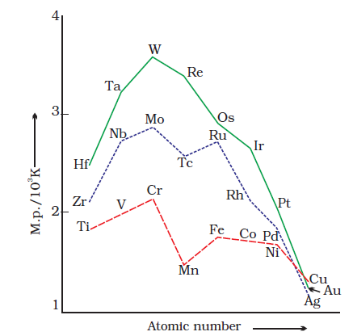
Fig. 8.1: Trends in melting points of transition elements
Another generalisation that may be drawn from Fig. 8.2 is that the metals of the second and third series have greater enthalpies of atomisation than the corresponding elements of the first series; this is an important factor in accounting for the occurrence of much more frequent metal – metal bonding in compounds of the heavy transition metals.
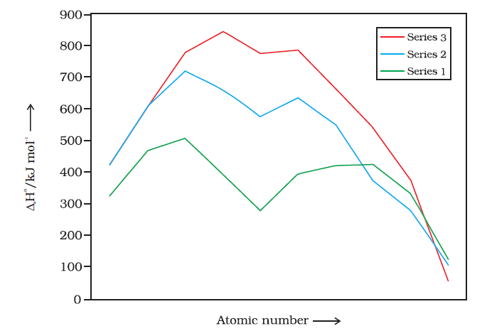
Fig. 8.2 Trends in enthalpies of atomisation of transition elements
In general, ions of the same charge in a given series show progressive decrease in radius with increasing atomic number. This is because the new electron enters a d orbital each time the nuclear charge increases by unity. It may be recalled that the shielding effect of a d electron is not that effective, hence the net electrostatic attraction between the nuclear charge and the outermost electron increases and the ionic radius decreases. The same trend is observed in the atomic radii of a given series. However, the variation within a series is quite small. An interesting point emerges when atomic sizes of one series are compared with those of the corresponding elements in the other series. The curves in Fig. 8.3 show an increase from the first (3d) to the second (4d) series of the elements but the radii of the third (5d) series are virtually the same as those of the corresponding members of the second series. This phenomenon is associated with the intervention of the 4f orbitals which must be filled before the 5d series of elements begin. The filling of 4f before 5d orbital results in a regular decrease in atomic radii called Lanthanoid contraction which essentially compensates for the expected increase in atomic size with increasing atomic number. The net result of the lanthanoid contraction is that the second and the third d series exhibit similar radii (e.g., Zr 160 pm, Hf 159 pm) and have very similar physical and chemical properties much more than that expected on the basis of usual family relationship.
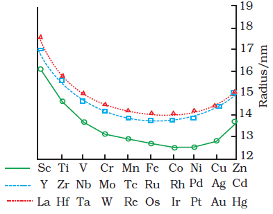
Fig. 8.3: Trends in atomic radii of transition elements
The factor responsible for the lanthanoid contraction is somewhat similar to that observed in an ordinary transition series and is attributed to similar cause, i.e., the imperfect shielding of one electron by another in the same set of orbitals. However, the shielding of one 4f electron by another is less than that of one d electron by another, and as the nuclear charge increases along the series, there is fairly regular decrease in the size of the entire 4f n orbitals.
The decrease in metallic radius coupled with increase in atomic mass results in a general increase in the density of these elements. Thus, from titanium (Z = 22) to copper (Z = 29) the significant increase in the density may be noted (Table 8.2).
Table 8.2: Electronic Configurations and some other Properties of the First Series of Transition Elements

Example 8.2
Why do the transition elements exhibit higher enthalpies of atomisation?
Solution
Because of large number of unpaired electrons in their atoms they have stronger interatomic interaction and hence stronger bonding between atoms resulting in higher enthalpies of atomisation.
Intext Question
8.2 In the series Sc (Z = 21) to Zn (Z = 30), the enthalpy of atomisation of zinc is the lowest, i.e., 126 kJ mol–1. Why?
8.3.3 Ionisation Enthalpies
Due to an increase in nuclear charge which accompanies the filling of the inner d orbitals, there is an increase in ionisation enthalpy along each series of the transition elements from left to right. However, many small variations occur. Table 8.2 gives the values for the first three ionisation enthalpies of the first row elements. These values show that the successive enthalpies of these elements do not increase as steeply as in the main group elements. Although the first ionisation enthalpy, in general, increases, the magnitude of the increase in the second and third ionisation enthalpies for the successive elements, in general, is much higher.
The irregular trend in the first ionisation enthalpy of the 3d metals, though of little chemical significance, can be accounted for by considering that the removal of one electron alters the relative energies of 4s and 3d orbitals. So the unipositive ions have dn configurations with no 4s electrons. There is thus, a reorganisation energy accompanying ionisation with some gains in exchange energy as the number of electrons increases and from the transference of s electrons into d orbitals. There is the generally expected increasing trend in the values as the effective nuclear charge increases. However, the value of Cr is lower because of the absence of any change in the d configuration and the value for Zn higher because it represents an ionisation from the 4s level. The lowest common oxidation state of these metals is +2. To form the M2+ions from the gaseous atoms, the sum of the first and second ionisation energies is required in addition to the enthalpy of atomisation for each element. The dominant term is the second ionisation enthalpy which shows unusually high values for Cr and Cu where the d5 and d10 configurations of the M+ions are disrupted, with considerable loss of exchange energy. The value for Zn is correspondingly low as the ionisation consists of the removal of an electron which allows the production of the stable d10 configuration. The trend in the third ionisation enthalpies is not complicated by the 4s orbital factor and shows the greater difficulty of removing an electron from the d5 (Mn2+) and d10 (Zn2+) ions superimposed upon the general increasing trend. In general, the third ionisation enthalpies are quite high and there is a marked break between the values for Mn2+ and Fe2+. Also the high values for copper, nickel and zinc indicate why it is difficult to obtain oxidation state greater than two for these elements.
Although ionisation enthalpies give some guidance concerning the relative stabilities of oxidation states, this problem is very complex and not amenable to ready generalisation.
8.3.4 Oxidation States
One of the notable features of a transition element is the great variety of oxidation states it may show in its compounds. Table 8.3 lists the common oxidation states of the first row transition elements.
Table 8.3: Oxidation States of the first row Transition Metals (the most common ones are in bold types)
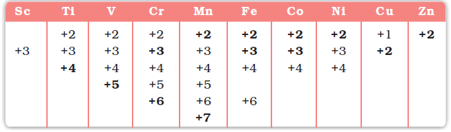
The elements which give the greatest number of oxidation states occur in or near the middle of the series. Manganese, for example, exhibits all the oxidation states from +2 to +7. The lesser number of oxidation states at the extreme ends stems from either too few electrons to lose or share (Sc, Ti) or too many d electrons (hence fewer orbitals available in which to share electrons with others) for higher valence (Cu, Zn). Thus, early in the series scandium(II) is virtually unknown and titanium (IV) is more stable than Ti(III) or Ti(II). At the other end, the only oxidation state of zinc is +2 (no d electrons are involved). The maximum oxidation states of reasonable stability correspond in value to the sum of the s and d electrons upto manganese (TiIVO2, VVO2+, CrVIO42–, MnVIIO4–) followed by a rather abrupt decrease in stability of higher oxidation states, so that the typical species to follow are FeII,III, CoII,III, NiII, CuI,II, ZnII.
The variability of oxidation states, a characteristic of transition elements, arises out of incomplete filling of d orbitals in such a way that their oxidation states differ from each other by unity, e.g., VII, VIII, VIV, VV. This is in contrast with the variability of oxidation states of non transition elements where oxidation states normally differ by a unit of two.
An interesting feature in the variability of oxidation states of the d–block elements is noticed among the groups (groups 4 through 10). Although in the p–block the lower oxidation states are favoured by the heavier members (due to inert pair effect), the opposite is true in the groups of d-block. For example, in group 6, Mo(VI) and W(VI) are found to be more stable than Cr(VI). Thus Cr(VI) in the form of dichromate in acidic medium is a strong oxidising agent, whereas MoO3 and WO3 are not.
Low oxidation states are found when a complex compound has ligands capable of π-acceptor character in addition to the σ-bonding. For example, in Ni(CO)4 and Fe(CO)5, the oxidation state of nickel and iron is zero.
Example 8.3
Name a transition element which does not exhibit variable oxidation states.
Solution
Scandium (Z = 21) does not exhibit variable oxidation states.
8.3.5 Trends in the M2+/M Standard Electrode Potentials
Table 8.4 contains the thermochemical parameters related to the transformation of the solid metal atoms to M2+ions in solution and their standard electrode potentials. The observed values of E and those calculated using the data of Table 8.4 are compared in Fig. 8.4.
The unique behaviour of Cu, having a positive E, accounts for its inability to liberate H2 from acids. Only oxidising acids (nitric and hot concentrated sulphuric) react with Cu, the acids being reduced. The high energy to transform Cu(s) to Cu2+(aq) is not balanced by its hydration enthalpy. The general trend towards less negative E values across the series is related to the general increase in the sum of the first and second ionisation enthalpies. It is interesting to note that the value of E for Mn, Ni and Zn are more negative than expected from the trend.
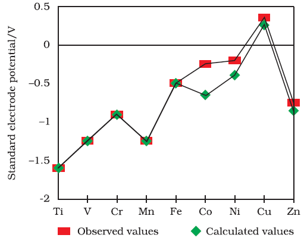
Fig. 8.4: Observed and calculated values for the standard electrode potentials (M2+® M°) of the elements Ti to Zn
Example 8.4
Why is Cr2+ reducing and Mn3+ oxidising when both have d4 configuration?
Solution
Cr2+ is reducing as its configuration changes from d4 to d3, the latter having a half-filled t2g level (see Unit 9) . On the other hand, the change from Mn2+ to Mn3+ results in the half-filled (d5) configuration which has extra stability.
Intext Question
8.4 The Eo (M2+/M) value for copper is positive (+0.34V). What is possible reason for this? (Hint: consider its high DaH o and low DhydH o )
Table 8.4: Thermochemical data (kJ mol-1) for the first row Transition Elements and the Standard Electrode Potentials for the Reduction of MII to M.
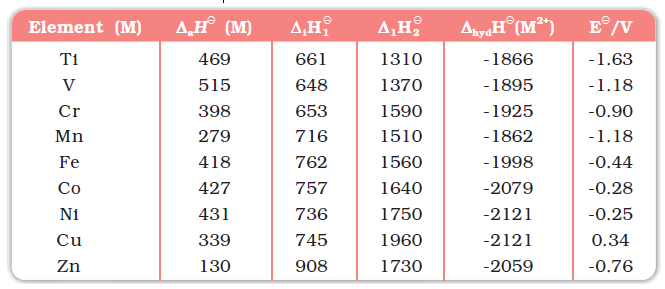
The stability of the half-filled d sub-shell in Mn2+ and the completely filled d10 configuration in Zn2+ are related to their Eo values, whereas Eo for Ni is related to the highest negative ∆hydH o.
8.3.6 Trends in the M3+/M2+Standard Electrode Potentials
An examination of the E(M3+/M2+) values (Table 8.2) shows the varying trends. The low value for Sc reflects the stability of Sc3+ which has a noble gas configuration. The highest value for Zn is due to the removal of an electron from the stable d10 configuration of Zn2+. The comparatively high value for Mn shows that Mn2+(d5) is particularly stable, whereas comparatively low value for Fe shows the extra stability of Fe3+ (d5). The comparatively low value for V is related to the stability of V2+ (half-filled t2g level, Unit 9).
8.3.7 Trends in Stability of Higher Oxidation States
Table 8.5 shows the stable halides of the 3d series of transition metals. The highest oxidation numbers are achieved in TiX4 (tetrahalides), VF5 and CrF6. The +7 state for Mn is not represented in simple halides but MnO3F is known, and beyond Mn no metal has a trihalide except FeX3 and CoF3. The ability of fluorine to stabilise the highest oxidation state is due to either higher lattice energy as in the case of CoF3, or higher bond enthalpy terms for the higher covalent compounds, e.g., VF5 and CrF6.
Although VV is represented only by VF5, the other halides, however, undergo hydrolysis to give oxohalides, VOX3. Another feature of fluorides is their instability in the low oxidation states e.g., VX2 (X = CI, Br or I) and the same applies to CuX. On the other hand, all CuII halides are known except the iodide. In this case, Cu2+ oxidises I– to I2:
Table 8.5: Formulas of Halides of 3d Metals
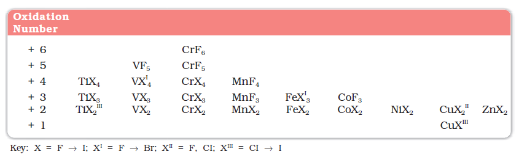
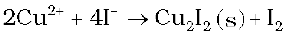
However, many copper (I) compounds are unstable in aqueous solution and undergo disproportionation.
2Cu+ → Cu2+ + Cu
The stability of Cu2+ (aq) rather than Cu+(aq) is due to the much more negative ∆hydHo of Cu2+ (aq) than Cu+, which more than compensates for the second ionisation enthalpy of Cu.
The ability of oxygen to stabilise the highest oxidation state is demonstrated in the oxides. The highest oxidation number in the oxides (Table 8.6) coincides with the group number and is attained in Sc2O3 to Mn2O7. Beyond Group 7, no higher oxides of Fe above Fe2O3, are known, although ferrates (VI)(FeO4)2–, are formed in alkaline media but they readily decompose to Fe2O3 and O2. Besides the oxides, oxocations stabilise Vv as VO2+, VIV as VO2+ and TiIV as TiO2+. The ability of oxygen to stabilise these high oxidation states exceeds that of fluorine. Thus the highest Mn fluoride is MnF4 whereas the highest oxide is Mn2O7. The ability of oxygen to form multiple bonds to metals explains its superiority. In the covalent oxide Mn2O7, each Mn is tetrahedrally surrounded by O’s including a Mn–O–Mn bridge. The tetrahedral [MO4]n- ions are known for VV, CrVl, MnV, MnVl and MnVII.
Table 8.6: Oxides of 3d Metals
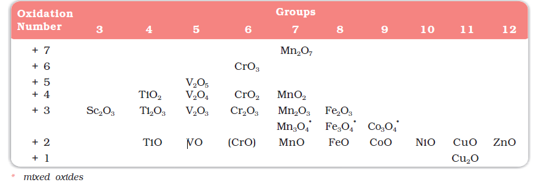
Example 8.5
How would you account for the increasing oxidising power in the Example 8.5 series VO2 + < Cr2O7 2– < MnO4 – ?
Solution
This is due to the increasing stability of the lower species to which they are reduced.
Intext Question
8.5 How would you account for the irregular variation of ionisation enthalpies (first and second) in the first series of the transition elements?
8.3.8 Chemical Reactivity and E 0Values
Transition metals vary widely in their chemical reactivity. Many of them are sufficiently electropositive to dissolve in mineral acids, although a few are ‘noble’—that is, they are unaffected by single acids.
The metals of the first series with the exception of copper are relatively more reactive and are oxidised by 1M H+, though the actual rate at which these metals react with oxidising agents like hydrogen ion (H+) is sometimes slow. For example, titanium and vanadium, in practice, are passive to dilute non oxidising acids at room temperature. The E0 values for M2+/M (Table 8.2) indicate a decreasing tendency to form divalent cations across the series. This general trend towards less negative E0 values is related to the increase in the sum of the first and second ionisation enthalpies. It is interesting to note that the E0 values for Mn, Ni and Zn are more negative than expected from the general trend. Whereas the stabilities of half-filled d subshell (d5) in Mn2+ and completely filled d subshell (d10) in zinc are related to their E e values; for nickel, Eo value is related to the highest negative enthalpy of hydration.
An examination of the E values for the redox couple M3+/M2+(Table 8.2) shows that Mn3+ and Co3+ ions are the strongest oxidising agents in aqueous solutions. The ions Ti2+, V2+ and Cr2+ are strong reducing agents and will liberate hydrogen from a dilute acid, e.g.,
2 Cr2+(aq) + 2 H+(aq) → 2 Cr3+(aq) + H2(g)
Example 8.6
For the first row transition metals the Eo values are:
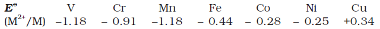
Explain the irregularity in the above values.
Solution
The E 0 (M2+/M) values are not regular which can be explained from the irregular variation of ionisation enthalpies ( i i D + D 1 2 H H ) and also the sublimation enthalpies which are relatively much less for manganese and vanadium.
Example 8.7
Why is the E0 value for the Mn3+/Mn2+ couple much more positive than that for Cr3+/Cr2+ or Fe3+/Fe2+? Explain.
Solution
Much larger third ionisation energy of Mn (where the required change is d5 to d4) is mainly responsible for this. This also explains why the +3 state of Mn is of little importance.
Intext Questions
8.6 Why is the highest oxidation state of a metal exhibited in its oxide or fluoride only?
8.7 Which is a stronger reducing agent Cr2+ or Fe2+ and why ?
8.3.9 Magnetic Properties
When a magnetic field is applied to substances, mainly two types of magnetic behaviour are observed: diamagnetism and paramagnetism (Unit 1). Diamagnetic substances are repelled by the applied field while the paramagnetic substances are attracted. Substances which are attracted very strongly are said to be ferromagnetic. In fact, ferromagnetism is an extreme form of paramagnetism. Many of the transition metal ions are paramagnetic.
Paramagnetism arises from the presence of unpaired electrons, each such electron having a magnetic moment associated with its spin angular momentum and orbital angular momentum. For the compounds of the first series of transition metals, the contribution of the orbital angular momentum is effectively quenched and hence is of no significance. For these, the magnetic moment is determined by the number of unpaired electrons and is calculated by using the ‘spin-only’ formula, i.e.,
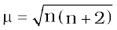
where n is the number of unpaired electrons and µ is the magnetic moment in units of Bohr magneton (BM). A single unpaired electron has a magnetic moment of 1.73 Bohr magnetons (BM).
The magnetic moment increases with the increasing number of unpaired electrons. Thus, the observed magnetic moment gives a useful indication about the number of unpaired electrons present in the atom, molecule or ion. The magnetic moments calculated from the ‘spin-only’ formula and those derived experimentally for some ions of the first row transition elements are given in Table 8.7. The experimental data are mainly for hydrated ions in solution or in the solid state.
Table 8.7: Calculated and Observed Magnetic Moments (BM)
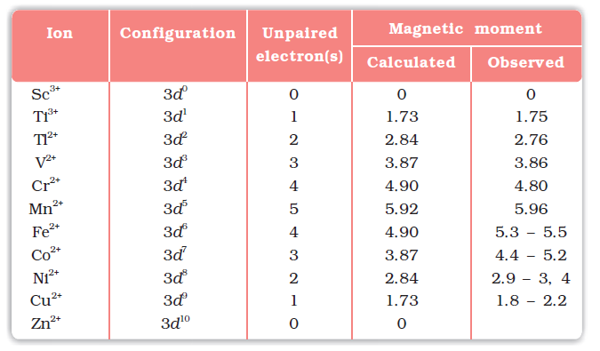
Example 8.8
Calculate the magnetic moment of a divalent ion in aqueous solution if its atomic number is 25.
Solution
With atomic number 25, the divalent ion in aqueous solution will have d5 configuration (five unpaired electrons). The magnetic moment, μ is
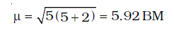
Intext Question
8.8 Calculate the 'spin only' magnetic moment of M2+(aq) ion (Z = 27).
8.3.10 Formation of Coloured Ions
When an electron from a lower energy d orbital is excited to a higher energy d orbital, the energy of excitation corresponds to the frequency of light absorbed (Unit 9). This frequency generally lies in the visible region. The colour observed corresponds to the complementary colour of the light absorbed. The frequency of the light absorbed is determined by the nature of the ligand. In aqueous solutions where water molecules are the ligands, the colours of the ions observed are listed in Table 8.8. A few coloured solutions of d–block elements are illustrated in Fig. 8.5.
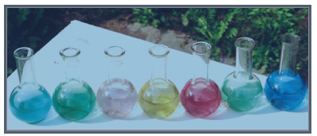
Fig. 8.5: Colours of some of the first row transition metal ions in aqueous solutions. From left to right: V4+,V3+,Mn2+,Fe3+,Co2+,Ni2+and Cu2+ .
Table 8.8: Colours of Some of the First Row (aquated) Transition Metal Ions
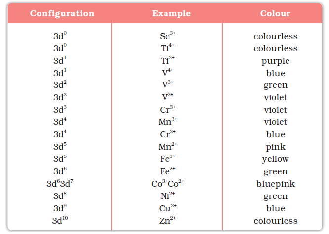
8.3.11 Formation of Complex Compounds
Complex compounds are those in which the metal ions bind a number of anions or neutral molecules giving complex species with characteristic properties. A few examples are: [Fe(CN)6]3–, [Fe(CN)6]4–, [Cu(NH3)4]2+ and [PtCl4]2–. (The chemistry of complex compounds is dealt with in detail in Unit 9). The transition metals form a large number of complex compounds. This is due to the comparatively smaller sizes of the metal ions, their high ionic charges and the availability of d orbitals for bond formation.
8.3.12 Catalytic Properties
The transition metals and their compounds are known for their catalytic activity. This activity is ascribed to their ability to adopt multiple oxidation states and to form complexes. Vanadium(V) oxide (in Contact Process), finely divided iron (in Haber’s Process), and nickel (in Catalytic Hydrogenation) are some of the examples. Catalysts at a solid surface involve the formation of bonds between reactant molecules and atoms of the surface of the catalyst (first row transition metals utilise 3d and 4s electrons for bonding). This has the effect of increasing the concentration of the reactants at the catalyst surface and also weakening of the bonds in the reacting molecules (the activation energy is lowering). Also because the transition metal ions can change their oxidation states, they become more effective as catalysts. For example, iron(III) catalyses the reaction between iodide and persulphate ions.
2 I– + s2O82– → I2 + 2 SO42–
An explanation of this catalytic action can be given as:
2 Fe3+ + 2 I– → 2 Fe2+ + I2
2 Fe2+ + s2O82– → 2 Fe3+ + 2SO42–
8.3.13 Formation of Interstitial Compounds
Interstitial compounds are those which are formed when small atoms like H, C or N are trapped inside the crystal lattices of metals. They are usually non stoichiometric and are neither typically ionic nor covalent, for example, TiC, Mn4N, Fe3H, VH0.56 and TiH1.7, etc. The formulas quoted do not, of course, correspond to any normal oxidation state of the metal. Because of the nature of their composition, these compounds are referred to as interstitial compounds. The principal physical and chemical characteristics of these compounds are as follows:
(i) They have high melting points, higher than those of pure metals.
(ii) They are very hard, some borides approach diamond in hardness.
(iii) They retain metallic conductivity.
(iv) They are chemically inert.
8.3.14 Alloy Formation
An alloy is a blend of metals prepared by mixing the components. Alloys may be homogeneous solid solutions in which the atoms of one metal are distributed randomly among the atoms of the other. Such alloys are formed by atoms with metallic radii that are within about 15 percent of each other. Because of similar radii and other characteristics of transition metals, alloys are readily formed by these metals. The alloys so formed are hard and have often high melting points. The best known are ferrous alloys: chromium, vanadium, tungsten, molybdenum and manganese are used for the production of a variety of steels and stainless steel. Alloys of transition metals with non transition metals such as brass (copper-zinc) and bronze (copper-tin), are also of considerable industrial importance.
Example 8.9
What is meant by 'disproportionation' of an oxidation state? Give an example.
Solution
When a particular oxidation state becomes less stable relative to other oxidation states, one lower, one higher, it is said to undergo disproportionation. For example, manganese (VI) becomes unstable relative to manganese(VII) and manganese (IV) in acidic solution.
3 MnVIO4 2– + 4 H+ → 2 MnVIIO– 4 + MnIVO2 + 2H2O
Intext Question
8.9 Explain why Cu+ ion is not stable in aqueous solutions?
8.4 Some Important Compounds of Transition Elements
8.4.1 Oxides and Oxoanions of Metals
These oxides are generally formed by the reaction of metals with oxygen at high temperatures. All the metals except scandium form MO oxides which are ionic. The highest oxidation number in the oxides, coincides with the group number and is attained in Sc2O3 to Mn2O7. Beyond group 7, no higher oxides of iron above Fe2O3 are known. Besides the oxides, the oxocations stabilise VV as VO2+, VIV as VO2+ and TiIV as TiO2+.
As the oxidation number of a metal increases, ionic character decreases. In the case of Mn, Mn2O7 is a covalent green oil. Even CrO3 and V2O5 have low melting points. In these higher oxides, the acidic character is predominant.
Thus, Mn2O7 gives HMnO4 and CrO3 gives H2CrO4 and H2Cr2O7. V2O5 is, however, amphoteric though mainly acidic and it gives VO43– as well as VO2+ salts. In vanadium there is gradual change from the basic V2O3 to less basic V2O4 and to amphoteric V2O5. V2O4 dissolves in acids to give VO2+ salts. Similarly, V2O5 reacts with alkalies as well as acids to give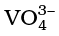 and respectively. The well characterised CrO is basic but Cr2O3 is amphoteric.
Potassium dichromate K2Cr2O7
Potassium dichromate is a very important chemical used in leather industry and as an oxidant for preparation of many azo compounds. Dichromates are generally prepared from chromate, which in turn are obtained by the fusion of chromite ore (FeCr2O4) with sodium or potassium carbonate in free access of air. The reaction with sodium carbonate occurs as follows:
4 FeCr2O4 + 8 Na2CO3 + 7 O2 → 8 Na2CrO4 + 2 Fe2O3 + 8 CO2
The yellow solution of sodium chromate is filtered and acidified with sulphuric acid to give a solution from which orange sodium dichromate, Na2Cr2O7. 2H2O can be crystallised.
2Na2CrO4 + 2 H+ → Na2Cr2O7 + 2 Na+ + H2O
Sodium dichromate is more soluble than potassium dichromate. The latter is therefore, prepared by treating the solution of sodium dichromate with potassium chloride.
Na2Cr2O7 + 2 KCl → K2Cr2O7 + 2 NaCl
Orange crystals of potassium dichromate crystallise out. The chromates and dichromates are interconvertible in aqueous solution depending upon pH of the solution. The oxidation state of chromium in chromate and dichromate is the same.
2 CrO42– + 2H+ → Cr2O72– + H2O
Cr2O72– + 2 OH- → 2 CrO42– + H2O
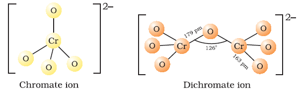
The structures of chromate ion, CrO42– and the dichromate ion, Cr2O72– are shown below. The chromate ion is tetrahedral whereas the dichromate ion consists of two tetrahedra sharing one corner with Cr–O–Cr bond angle of 126°. Sodium and potassium dichromates are strong oxidising agents; the sodium salt has a greater solubility in water and is extensively used as an oxidising agent in organic chemistry. Potassium dichromate is used as a primary standard in volumetric analysis. In acidic solution, its oxidising action can be represented as follows:
Cr2O72– + 14H+ + 6e– → 2Cr3+ + 7H2O (E0 = 1.33V)
Thus, acidified potassium dichromate will oxidise iodides to iodine, sulphides to sulphur, tin(II) to tin(IV) and iron(II) salts to iron(III). The half-reactions are noted below:
6 I– → 3I2 + 6 e–; 3 Sn2+ → 3Sn4+ + 6 e–
3 H2S → 6H+ + 3S + 6e–; 6 Fe2+ → 6Fe3+ + 6 e–
The full ionic equation may be obtained by adding the half-reaction for potassium dichromate to the half-reaction for the reducing agent, for e.g.,
Cr2O72– + 14 H+ + 6 Fe2+ → 2 Cr3+ + 6 Fe3+ + 7 H2O
Potassium permanganate KMnO4
Potassium permanganate is prepared by fusion of MnO2 with an alkali metal hydroxide and an oxidising agent like KNO3. This produces the dark green K2MnO4 which disproportionates in a neutral or acidic solution to give permanganate.
2MnO2 + 4KOH + O2 → 2K2MnO4 + 2H2O
3MnO42– + 4H+ → 2MnO4– + MnO2 + 2H2O
Commercially it is prepared by the alkaline oxidative fusion of MnO2 followed by the electrolytic oxidation of manganate (Vl).
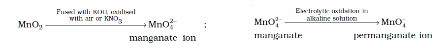
In the laboratory, a manganese (II) ion salt is oxidised by peroxodisulphate to permanganate.
2Mn2+ + 5s2O82– + 8H2O → 2MnO4– + 10SO42– + 16H+
Potassium permanganate forms dark purple (almost black) crystals which are isostructural with those of KClO4. The salt is not very soluble in water (6.4 g/100 g of water at 293 K), but when heated it decomposes at 513 K.
2KMnO4 → K2MnO4 + MnO2 + O2
It has two physical properties of considerable interest: its intense colour and its weak temperature dependent paramagnetism. These can be explained by the use of molecular orbital theory which is beyond the present scope.
The manganate and permanganate ions are tetrahedral; the green manganate is paramagnetic with one unpaired electron but the permanganate is diamagnetic.
The π-bonding takes place by overlap of p orbitals of oxygen with d orbitals of manganese.
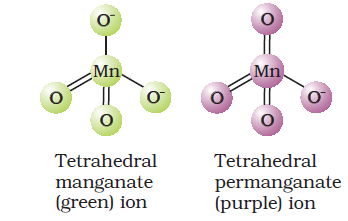
Acidified permanganate solution oxidises oxalates to carbon dioxide, iron(II) to iron(III), nitrites to nitrates and iodides to free iodine. The half-reactions of reductants are:
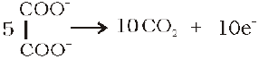
5 Fe2+ → 5 Fe3+ + 5e–
5NO2– + 5H2O → 5NO3– + 10H+ + l0e–
10I– → 5I2 + 10e–
The full reaction can be written by adding the half-reaction for KMnO4 to the half-reaction of the reducing agent, balancing wherever necessary.
If we represent the reduction of permanganate to manganate, manganese dioxide and manganese(II) salt by half-reactions,
MnO4– + e– → MnO42– (E0 = + 0.56 V)
MnO4– + 4H+ + 3e– → MnO2 + 2H2O (E0 = + 1.69 V)
MnO4– + 8H+ + 5e– → Mn2+ + 4H2O (E0 = + 1.52 V)
We can very well see that the hydrogen ion concentration of the solution plays an important part in influencing the reaction. Although many reactions can be understood by consideration of redox potential, kinetics of the reaction is also an important factor. Permanganate at [H+] = 1 should oxidise water but in practice the reaction is extremely slow unless either manganese(ll) ions are present or the temperature is raised.
A few important oxidising reactions of KMnO4 are given below:
1. In acid solutions:
(a) Iodine is liberated from potassium iodide :
10I– + 2MnO4– + 16H+ ——> 2Mn2+ + 8H2O + 5I2
(b) Fe2+ ion (green) is converted to Fe3+ (yellow):
5Fe2+ + MnO4– + 8H+ ——> Mn2+ + 4H2O + 5Fe3+
(c) Oxalate ion or oxalic acid is oxidised at 333 K:
5C2O42– + 2MnO4– + 16H+ ——> 2Mn2+ + 8H2O + 10CO2
(d) Hydrogen sulphide is oxidised, sulphur being precipitated:
H2S —> 2H+ + s2–
5s2– + 2MnO–4 + 16H+ ——> 2Mn2+ + 8H2O + 5S
(e) Sulphurous acid or sulphite is oxidised to a sulphate or sulphuric acid:
5SO32– + 2MnO4– + 6H+ ——> 2Mn2+ + 3H2O + 5SO42–
(f) Nitrite is oxidised to nitrate:
5NO2– + 2MnO4– + 6H+ ——> 2Mn2+ + 5NO3– + 3H2O
2. In neutral or faintly alkaline solutions:
(a) A notable reaction is the oxidation of iodide to iodate:
2MnO4– + H2O + I– ——> 2MnO2 + 2OH– + IO3–
(b) Thiosulphate is oxidised almost quantitatively to sulphate:
8MnO4– + 3s2O32– + H2O ——> 8MnO2 + 6SO42– + 2OH–
(c) Manganous salt is oxidised to MnO2; the presence of zinc sulphate or zinc oxide catalyses the oxidation:
2MnO4– + 3Mn2+ + 2H2O ——> 5MnO2 + 4H+
Note: Permanganate titrations in presence of hydrochloric acid are unsatisfactory since hydrochloric acid is oxidised to chlorine.
Uses: Besides its use in analytical chemistry, potassium permanganate is used as a favourite oxidant in preparative organic chemistry. Its uses for the bleaching of wool, cotton, silk and other textile fibres and for the decolourisation of oils are also dependent on its strong oxidising power.
THE INNER TRANSITION ELEMENTS (f-BLOCK)
The f-block consists of the two series, lanthanoids (the fourteen elements following lanthanum) and actinoids (the fourteen elements following actinium). Because lanthanum closely resembles the lanthanoids, it is usually included in any discussion of the lanthanoids for which the general symbol Ln is often used. Similarly, a discussion of the actinoids includes actinium besides the fourteen elements constituting the series. The lanthanoids resemble one another more closely than do the members of ordinary transition elements in any series. They have only one stable oxidation state and their chemistry provides an excellent opportunity to examine the effect of small changes in size and nuclear charge along a series of otherwise similar elements. The chemistry of the actinoids is, on the other hand, much more complicated. The complication arises partly owing to the occurrence of a wide range of oxidation states in these elements and partly because their radioactivity creates special problems in their study; the two series will be considered separately here.
8.5 The Lanthanoids
The names, symbols, electronic configurations of atomic and some ionic states and atomic and ionic radii of lanthanum and lanthanoids (for which the general symbol Ln is used) are given in Table 8.9.
8.5.1 Electronic Configurations
It may be noted that atoms of these elements have electronic configuration with 6s2 common but with variable occupancy of 4f level (Table 8.9). However, the electronic configurations of all the tripositive ions (the most stable oxidation state of all the lanthanoids) are of the form 4f n (n = 1 to 14 with increasing atomic number).
8.5.2 Atomic and Ionic Sizes
The overall decrease in atomic and ionic radii from lanthanum to lutetium (the lanthanoid contraction) is a unique feature in the chemistry of the lanthanoids. It has far reaching consequences in the chemistry of the third transition series of the elements. The decrease in atomic radii (derived from the structures of metals) is not quite regular as it is regular in M3+ ions (Fig. 8.6). This contraction is, of course, similar to that observed in an ordinary transition series and is attributed to the same cause, the imperfect shielding of one electron by another in the same sub-shell. However, the shielding of one 4 f electron by another is less than one d electron by another with the increase in nuclear charge along the series. There is fairly regular decrease in the sizes with increasing atomic number.
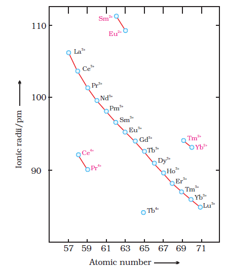
Fig. 8.6: Trends in ionic radii of lanthanoids
The cumulative effect of the contraction of the lanthanoid series, known as lanthanoid contraction, causes the radii of the members of the third transition series to be very similar to those of the corresponding members of the second series. The almost identical radii of Zr (160 pm) and Hf (159 pm), a consequence of the lanthanoid contraction, account for their occurrence together in nature and for the difficulty faced in their separation.
8.5.3 Oxidation States
In the lanthanoids, La(III) and Ln(III) compounds are predominant species. However, occasionally +2 and +4 ions in solution or in solid compounds are also obtained. This irregularity (as in ionisation enthalpies) arises mainly from the extra stability of empty, half-filled or filled f subshell. Thus, the formation of CeIV is favoured by its noble gas configuration, but it is a strong oxidant reverting to the common +3 state. The Eo value for Ce4+/ Ce3+ is + 1.74 V which suggests that it can oxidise water. However, the reaction rate is very slow and hence Ce(IV) is a good analytical reagent. Pr, Nd, Tb and Dy also exhibit +4 state but only in oxides, MO2. Eu2+ is formed by losing the two s electrons and its f 7 configuration accounts for the formation of this ion. However, Eu2+ is a strong reducing agent changing to the common +3 state. Similarly Yb2+ which has f 14 configuration is a reductant. TbIV has half-filled f-orbitals and is an oxidant. The behaviour of samarium is very much like europium, exhibiting both +2 and +3 oxidation states.
Table 8.9: Electronic Configurations and Radii of Lanthanum and Lanthanoids
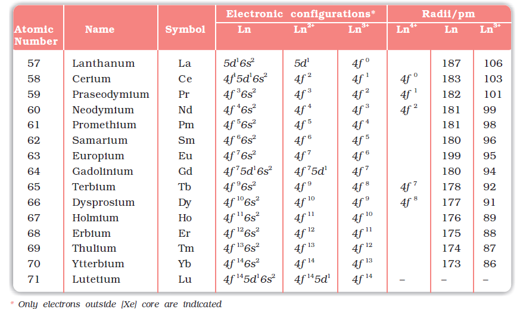
8.5.4 General Characteristics
All the lanthanoids are silvery white soft metals and tarnish rapidly in air. The hardness increases with increasing atomic number, samarium being steel hard. Their melting points range between 1000 to 1200 K but samarium melts at 1623 K. They have typical metallic structure and are good conductors of heat and electricity. Density and other properties change smoothly except for Eu and Yb and occasionally for Sm and Tm.
Many trivalent lanthanoid ions are coloured both in the solid state and in aqueous solutions. Colour of these ions may be attributed to the presence of f electrons. Neither La3+ nor Lu3+ ion shows any colour but the rest do so. However, absorption bands are narrow, probably because of the excitation within flevel. The lanthanoid ions other than the f 0 type (La3+ and Ce4+) and the f 14 type (Yb2+ and Lu3+) are all paramagnetic. The paramagnetism rises to maximum in neodymium.
The first ionisation enthalpies of the lanthanoids are around 600 kJ mol–1, the second about 1200 kJ mol–1 comparable with those of calcium. A detailed discussion of the variation of the third ionisation enthalpies indicates that the exchange enthalpy considerations (as in 3d orbitals of the first transition series), appear to impart a certain degree of stability to empty, half-filled and completely filled orbitals f level. This is indicated from the abnormally low value of the third ionisation enthalpy of lanthanum, gadolinium and lutetium.
In their chemical behaviour, in general, the earlier members of the series are quite reactive similar to calcium but, with increasing atomic number, they behave more like aluminium. Values for E for the half-reaction:
Ln3+(aq) + 3e– → Ln(s)
are in the range of –2.2 to –2.4 V except for Eu for which the value is–2.0 V. This is, of course, a small variation. The metals combine with hydrogen when gently heated in the gas. The carbides, Ln3C, Ln2C3 and LnC2 are formed when the metals are heated with carbon. They liberate hydrogen from dilute acids and burn in halogens to form halides. They form oxides M2O3 and hydroxides M(OH)3. The hydroxides are definite compounds, not just hydrated oxides. They are basic like alkaline earth metal oxides and hydroxides. Their general reactions are depicted in Fig. 8.7.
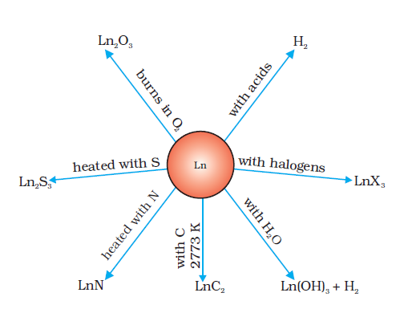
Fig 8.7: Chemical reactions of the lanthanoids.
The best single use of the lanthanoids is for the production of alloy steels for plates and pipes. A well known alloy is mischmetall which consists of a lanthanoid metal (~ 95%) and iron (~ 5%) and traces of S, C, Ca and Al. A good deal of mischmetall is used in Mg-based alloy to produce bullets, shell and lighter flint. Mixed oxides of lanthanoids are employed as catalysts in petroleum cracking. Some individual Ln oxides are used as phosphors in television screens and similar fluorescing surfaces.
8.6 The Actinoids
The actinoids include the fourteen elements from Th to Lr. The names, symbols and some properties of these elements are given in Table 8.10.
Table 8.10: Some Properties of Actinium and Actinoids
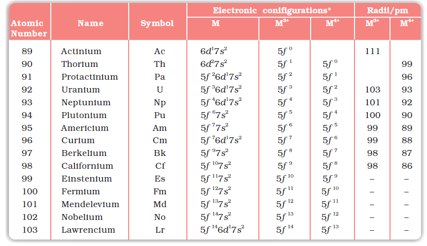
The actinoids are radioactive elements and the earlier members have relatively long half-lives, the latter ones have half-life values ranging from a day to 3 minutes for lawrencium (Z =103). The latter members could be prepared only in nanogram quantities. These facts render their study more difficult.
8.6.1 Electronic Configurations
All the actinoids are believed to have the electronic configuration of 7s2 and variable occupancy of the 5f and 6d subshells. The fourteen electrons are formally added to 5f, though not in thorium (Z = 90) but from Pa onwards the 5f orbitals are complete at element 103. The irregularities in the electronic configurations of the actinoids, like those in the lanthanoids are related to the stabilities of the f 0, f 7 and f 14 occupancies of the 5f orbitals. Thus, the configurations of Am and Cm are [Rn] 5f 77s2 and [Rn] 5f 76d17s2. Although the 5f orbitals resemble the 4f orbitals in their angular part of the wave-function, they are not as buried as 4f orbitals and hence 5f electrons can participate in bonding to a far greater extent.
8.6.2 Ionic Sizes
The general trend in lanthanoids is observable in the actinoids as well. There is a gradual decrease in the size of atoms or M3+ ions across the series. This may be referred to as the actinoid contraction (like lanthanoid contraction). The contraction is, however, greater from element to element in this series resulting from poor shielding by 5f electrons.
8.6.3 Oxidation States
There is a greater range of oxidation states, which is in part attributed to the fact that the 5f, 6d and 7s levels are of comparable energies. The known oxidation states of actinoids are listed in Table 8.11.
The actinoids show in general +3 oxidation state. The elements, in the first half of the series frequently exhibit higher oxidation states. For example, the maximum oxidation state increases from +4 in Th to +5, +6 and +7 respectively in Pa, U and Np but decreases in succeeding elements (Table 8.11). The actinoids resemble the lanthanoids in having more compounds in +3 state than in the +4 state. However, +3 and +4 ions tend to hydrolyse. Because the distribution of oxidation states among the actinoids is so uneven and so different for the former and later elements, it is unsatisfactory to review their chemistry in terms of oxidation states.
Table 8.11: Oxidation States of Actinium and Actinoids
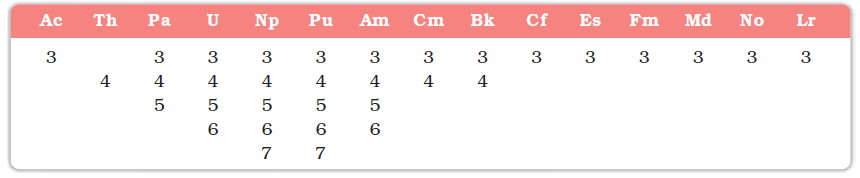
8.6.4 General Characteristics and Comparison with Lanthanoids
The actinoid metals are all silvery in appearance but display a variety of structures. The structural variability is obtained due to irregularities in metallic radii which are far greater than in lanthanoids.
The actinoids are highly reactive metals, especially when finely divided. The action of boiling water on them, for example, gives a mixture of oxide and hydride and combination with most non metals takes place at moderate temperatures. Hydrochloric acid attacks all metals but most are slightly affected by nitric acid owing to the formation of protective oxide layers; alkalies have no action.
The magnetic properties of the actinoids are more complex than those of the lanthanoids. Although the variation in the magnetic susceptibility of the actinoids with the number of unpaired 5 f electrons is roughly parallel to the corresponding results for the lanthanoids, the latter have higher values.
It is evident from the behaviour of the actinoids that the ionisation enthalpies of the early actinoids, though not accurately known, but are lower than for the early lanthanoids. This is quite reasonable since it is to be expected that when 5f orbitals are beginning to be occupied, they will penetrate less into the inner core of electrons. The 5f electrons, will therefore, be more effectively shielded from the nuclear charge than the 4f electrons of the corresponding lanthanoids. Because the outer electrons are less firmly held, they are available for bonding in the actinoids.
A comparison of the actinoids with the lanthanoids, with respect to different characteristics as discussed above, reveals that behaviour similar to that of the lanthanoids is not evident until the second half of the actinoid series. However, even the early actinoids resemble the lanthanoids in showing close similarities with each other and in gradual variation in properties which do not entail change in oxidation state. The lanthanoid and actinoid contractions, have extended effects on the sizes, and therefore, the properties of the elements succeeding them in their respective periods. The lanthanoid contraction is more important because the chemistry of elements succeeding the actinoids are much less known at the present time.
Example 8.10
Name a member of the lanthanoid series which is well known to exhibit +4 oxidation state.
Solution
Cerium (Z = 58)
Intext Question
8.10 Actinoid contraction is greater from element to element than lanthanoid contraction. Why?
8.7 Some Applications of d- and f-Block Elements
Iron and steels are the most important construction materials. Their production is based on the reduction of iron oxides, the removal of impurities and the addition of carbon and alloying metals such as Cr, Mn and Ni. Some compounds are manufactured for special purposes such as TiO for the pigment industry and MnO2 for use in dry battery cells. The battery industry also requires Zn and Ni/Cd. The elements of Group 11 are still worthy of being called the coinage metals, although Ag and Au are restricted to collection items and the contemporary UK ‘copper’ coins are copper-coated steel. The ‘silver’ UK coins are a Cu/Ni alloy. Many of the metals and/or their compounds are essential catalysts in the chemical industry. V2O5 catalyses the oxidation of SO2 in the manufacture of sulphuric acid. TiCl4 with A1(CH3)3 forms the basis of the Ziegler catalysts used to manufacture polyethylene (polythene). Iron catalysts are used in the Haber process for the production of ammonia from N2/H2 mixtures. Nickel catalysts enable the hydrogenation of fats to proceed. In the Wacker process the oxidation of ethyne to ethanal is catalysed by PdCl2. Nickel complexes are useful in the polymerisation of alkynes and other organic compounds such as benzene. The photographic industry relies on the special light-sensitive properties of AgBr.
Summary
The d-block consisting of Groups 3-12 occupies the large middle section of the periodic table. In these elements the inner d orbitals are progressively filled. The f-block is placed outside at the bottom of the periodic table and in the elements of this block, 4f and 5f orbitals are progressively filled.
Corresponding to the filling of 3d, 4d and 5d orbitals, three series of transition elements are well recognised. All the transition elements exhibit typical metallic properties such as –high tensile strength, ductility, malleability, thermal and electrical conductivity and metallic character. Their melting and boiling points are high which are attributed to the involvement of (n–1) d electrons resulting into strong interatomic bonding. In many of these properties, the maxima occur at about the middle of each series which indicates that one unpaired electron per d orbital is particularly a favourable configuration for strong interatomic interaction.
Successive ionisation enthalpies do not increase as steeply as in the main group elements with increasing atomic number. Hence, the loss of variable number of electrons from (n –1) d orbitals is not energetically unfavourable. The involvement of (n–1) d electrons in the behaviour of transition elements impart certain distinct characteristics to these elements. Thus, in addition to variable oxidation states, they exhibit paramagnetic behaviour, catalytic properties and tendency for the formation of coloured ions, interstitial compounds and complexes.
The transition elements vary widely in their chemical behaviour. Many of them are sufficiently electropositive to dissolve in mineral acids, although a few are 'noble'. Of the first series, with the exception of copper, all the metals are relatively reactive.
The transition metals react with a number of non-metals like oxygen, nitrogen, sulphur and halogens to form binary compounds. The first series transition metal oxides
are generally formed from the reaction of metals with oxygen at high temperatures. These oxides dissolve in acids and bases to form oxometallic salts. Potassium dichromate and potassium permanganate are common examples. Potassium dichromate is prepared from the chromite ore by fusion with alkali in presence of air and acidifying the extract. Pyrolusite ore (MnO2) is used for the preparation of potassium permanganate. Both the dichromate and the permanganate ions are strong oxidising agents.
The two series of inner transition elements, lanthanoids and actinoids constitute the f-block of the periodic table. With the successive filling of the inner orbitals, 4f, there is a gradual decrease in the atomic and ionic sizes of these metals along the series (lanthanoid contraction). This has far reaching consequences in the chemistry of the elements succeeding them. Lanthanum and all the lanthanoids are rather soft white metals. They react easily with water to give solutions giving +3 ions. The principal oxidation state is +3, although +4 and +2 oxidation states are also exhibited by some occasionally. The chemistry of the actinoids is more complex in view of their ability to exist in different oxidation states. Furthermore, many of the actinoid elements are radioactive which make the study of these elements rather difficult.
There are many useful applications of the d- and f-block elements and their compounds, notable among them being in varieties of steels, catalysts, complexes,
organic syntheses, etc.
Exercises
8.1 Write down the electronic configuration of:
(i) Cr3+ (iii) Cu+ (v) Co2+ (vii) Mn2+
(ii) Pm3+ (iv) Ce4+ (vi) Lu2+ (viii) Th4+
8.2 Why are Mn2+ compounds more stable than Fe2+ towards oxidation to their +3 state?
8.3 Explain briefly how +2 state becomes more and more stable in the first half of the first row transition elements with increasing atomic number?
8.4 To what extent do the electronic configurations decide the stability of oxidation states in the first series of the transition elements? Illustrate your answer with examples.
8.5 What may be the stable oxidation state of the transition element with the following d electron configurations in the ground state of their atoms : 3d3, 3d5, 3d8 and 3d4?
8.6 Name the oxometal anions of the first series of the transition metals in which the metal exhibits the oxidation state equal to its group number.
8.7 What is lanthanoid contraction? What are the consequences of lanthanoid contraction?
8.8 What are the characteristics of the transition elements and why are they called transition elements? Which of the d-block elements may not be regarded as the transition elements?
8.9 In what way is the electronic configuration of the transition elements different from that of the non transition elements?
8.10 What are the different oxidation states exhibited by the lanthanoids?
8.11 Explain giving reasons:
(i) Transition metals and many of their compounds show paramagnetic
behaviour.
(ii) The enthalpies of atomisation of the transition metals are high.
(iii) The transition metals generally form coloured compounds.
(iv) Transition metals and their many compounds act as good catalyst.
8.12 What are interstitial compounds? Why are such compounds well known for transition metals?
8.13 How is the variability in oxidation states of transition metals different from that of the non transition metals? Illustrate with examples.
8.14 Describe the preparation of potassium dichromate from iron chromite ore. What is the effect of increasing pH on a solution of potassium dichromate?
8.15 Describe the oxidising action of potassium dichromate and write the ionic equations for its reaction with:
(i) iodide (ii) iron(II) solution and (iii) H2S
8.16 Describe the preparation of potassium permanganate. How does the acidified permanganate solution react with (i) iron(II) ions (ii) SO2 and (iii) oxalic acid?
Write the ionic equations for the reactions.
8.17 For M2+/M and M3+/M2+systems the EV values for some metals are as follows:
Cr2+/Cr -0.9V Cr3/Cr2+ -0.4 V
Mn2+/Mn -1.2V Mn3+/Mn2+ +1.5 V
Fe2+/Fe -0.4V Fe3+/Fe2+ +0.8 V
Use this data to comment upon:
(i) the stability of Fe3+ in acid solution as compared to that of Cr3+ or Mn3+ and
(ii) the ease with which iron can be oxidised as compared to a similar process for either chromium or manganese metal.
8.18 Predict which of the following will be coloured in aqueous solution? Ti3+, V3+, Cu+, Sc3+, Mn2+, Fe3+ and Co2+. Give reasons for each.
8.19 Compare the stability of +2 oxidation state for the elements of the first transition series.
8.20 Compare the chemistry of actinoids with that of the lanthanoids with special reference to:
(i) electronic configuration (iii) oxidation state
(ii) atomic and ionic sizes and (iv) chemical reactivity.
8.21 How would you account for the following:
(i) Of the d4 species, Cr2+ is strongly reducing while manganese
(III) is strongly oxidising.
(ii) Cobalt(II) is stable in aqueous solution but in the presence of complexing reagents it is easily oxidised.
(iii) The d1 configuration is very unstable in ions.
8.22 What is meant by 'disproportionation'? Give two examples of disproportionation reaction in aqueous solution.
8.23 Which metal in the first series of transition metals exhibits +1 oxidation state most frequently and why?
8.24 Calculate the number of unpaired electrons in the following gaseous ions: Mn3+, Cr3+, V3+ and Ti3+. Which one of these is the most stable in aqueous solution?
8.25 Give examples and suggest reasons for the following features of the transition metal chemistry:
(i) The lowest oxide of transition metal is basic, the highest is amphoteric/acidic.
(ii) A transition metal exhibits highest oxidation state in oxides and fluorides.
(iii) The highest oxidation state is exhibited in oxoanions of a metal.
8.26 Indicate the steps in the preparation of:
(i) K2Cr2O7 from chromite ore. (ii) KMnO4 from pyrolusite ore.
8.27 What are alloys? Name an important alloy which contains some of the lanthanoid metals. Mention its uses.
8.28 What are inner transition elements? Decide which of the following atomic numbers are the atomic numbers of the inner transition elements : 29, 59, 74, 95, 102, 104.
8.29 The chemistry of the actinoid elements is not so smooth as that of the lanthanoids. Justify this statement by giving some examples from the oxidation state of these elements.
8.30 Which is the last element in the series of the actinoids? Write the electronic configuration of this element. Comment on the possible oxidation state of this element.
8.31 Use Hund's rule to derive the electronic configuration of Ce3+ ion, and calculate its magnetic moment on the basis of 'spin-only' formula.
8.32 Name the members of the lanthanoid series which exhibit +4 oxidation states and those which exhibit +2 oxidation states. Try to correlate this type of behaviour with the electronic configurations of these elements.
8.33 Compare the chemistry of the actinoids with that of lanthanoids with reference to: (i) electronic configuration (ii) oxidation states and (iii) chemical reactivity.
8.34 Write the electronic configurations of the elements with the atomic numbers 61, 91, 101, and 109.
8.35 Compare the general characteristics of the first series of the transition metals with those of the second and third series metals in the respective vertical columns. Give special emphasis on the following points:
(i) electronic configurations (ii) oxidation states (iii) ionisation enthalpies and (iv) atomic sizes.
8.36 Write down the number of 3d electrons in each of the following ions: Ti2+, V2+, Cr3+, Mn2+, Fe2+, Fe3+, Co2+, Ni2+ and Cu2+. Indicate how would you expect the five 3d orbitals to be occupied for these hydrated ions (octahedral).
8.37 Comment on the statement that elements of the first transition series possess many properties different from those of heavier transition elements.
8.38 What can be inferred from the magnetic moment values of the following complex species ?
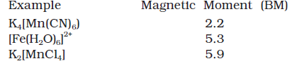
Answers to Some Intext Questions
8.1 Silver (Z = 47) can exhibit +2 oxidation state wherein it will have incompletely filled d-orbitals (4d), hence a transition element.
8.2 In the formation of metallic bonds, no eletrons from 3d-orbitals are involved in case of zinc, while in all other metals of the 3d series, electrons from the d-orbitals are always involved in the formation of metallic bonds.
8.3 Manganese (Z = 25), as its atom has the maximum number of unpaired electrons.
8.5 Irregular variation of ionisation enthalpies is mainly attributed to varying degree of stability of different 3d-configurations (e.g., d0, d5, d10 are exceptionally stable).
8.6 Because of small size and high electronegativity oxygen or fluorine can oxidise the metal to its highest oxidation state.
8.7 Cr2+ is stronger reducing agent than Fe2+ Reason: d4 → d3 occurs in case of Cr2+ to Cr3+ But d6 → d5 occurs in case of Fe2+ to Fe3+ In a medium (like water) d3 is more stable as compared to d5 (see CFSE)
8.9 Cu+ in aqueous solution underoes disproportionation, i.e., 2Cu+(aq) → Cu2+(aq) + Cu(s) The E0 value for this is favourable.
8.10 The 5f electrons are more effectively shielded from nuclear charge. In other words the 5f electrons themselves provide poor shielding from element to element in the series.